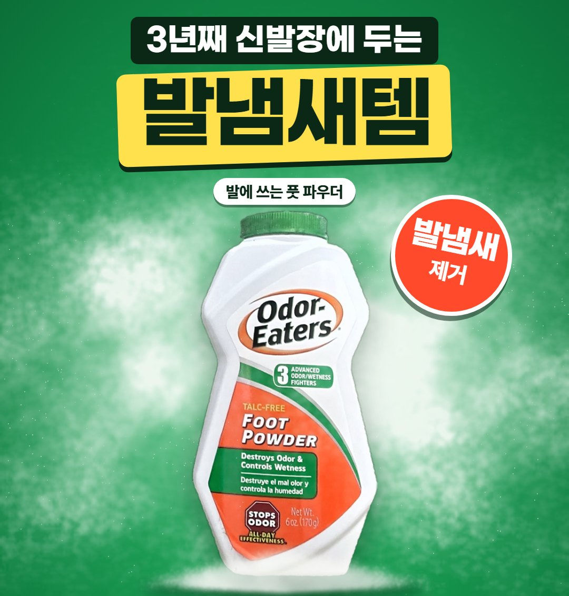

3년째 신발장에 두는 발냄새템: 오더이터 풋 파우더 3년 사용 후기

땀 많은 발로 3년 써 본 솔직 후기
오더이터 풋 파우더 · 직접 사서 쓰는 사용자
- 처음 산 이유
- 발에 땀이 많은 편이에요. 씻고 나와도 냄새가 발에 밴 느낌이 남아서 처음 샀어요.
- 3년째 쓰는 이유
- 제 경우엔 냄새가 확 잡히고, 발이 뽀송하게 유지됐어요. 땀 때문에 냄새가 나는 저한테는 이게 제일 잘 맞았어요.
- 아쉬운 점
- 뿌릴 때 가루가 흩날려요.

오더이터 풋 파우더 · 직접 사서 쓰는 사용자